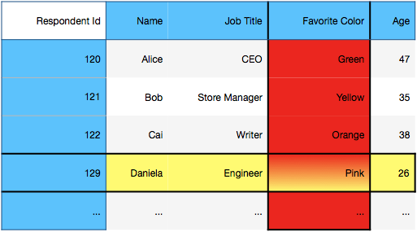

Tabular Data¶
The Tabular Data Model¶
Learning outcomes¶
Understand the tabular data model.
Describe the contents of simple tables.
Introduction¶
Investigations into phenomena require taking measurements of events or individuals in question. These two primary components of a study are typically kept in tabular data structures. The rows of a table consist of observations (e.g. individuals or events), whereas the columns of a table contain the measurements made on each individual.
For example, the table below consists of the answers to survey questions sent to a group of people. Each person (individual) provides answers to the questions posed (the measurements).
Respondent Id |
Name |
Job Title |
Favorite Color |
Age |
|---|---|---|---|---|
120 |
Alice |
CEO |
Green |
47 |
121 |
Bob |
Store Manager |
Yellow |
35 |
122 |
Cai |
Writer |
Orange |
38 |
129 |
Daniela |
Engineer |
Pink |
26 |
… |
… |
… |
… |
… |
The anatomy of a table¶
Tables are two-dimensional data structures holding observations; each observation is composed of different measurements or attributes.
A row of a table consists of an individual observation. As a table may contain a wide variety of attributes, a given row may describe a single individual in a variety of ways.
A column of a table consists of the collection of a single measurement for all observations. A column consists of data of homogeneous scale on which statistics are calculated. Columns are often called variables or attributes as well.
Tables have labels that identify their rows and columns:
The row labels are referred to as the index of the table.
The column labels are referred to as the column names of the table.

Example: In the table above, the red column is the favorite color variable, the yellow row contains the survey response for respondent 129, the blue portions of the table contain the index and column labels.
Tables in python, using Pandas.¶
Python’s most popular library for table manipulation is called Pandas. The name derives from the term ‘Panel Data’. Pandas is a large, active library used by a large community of pythond developers engaged in data manipulation. Learning to use this library comes with both the advantages and frustrations of using any active code-base:
The advantages:
it has many useful features that makes data manipulation quick and easy,
many of
Pandas’ features areC-optimized, making it far more performant than pure python code
The disadvantages:
the library evolved organically, yielding an interface that is sometimes awkward and unintuitive,
much of the library is under active development, so don’t be surprised if newer versions behaving differently!
Pandas typically has many ways of coding the same logic using a wide variety of functions and methods. These notes will restrict usage to a minimal set of the Pandas library that lend themselves toward the general patterns of tabular computing, applicable beyond Pandas (e.g. in SQL, R, Spark).
While the reader is encouraged to explore the myriad functions and methods of the Pandas API, they are also encouraged to attempt to implement solutions using the smaller set of functions considered in these notes. Regardless, the reader is encouraged to explore the Pandas documentation (which is quite good!) and understand the possible inputs and outputs of each function they use.
To begin using Pandas, import the library as follows:
import pandas as pd
Creating DataFrame objects¶
Depending on the perspective, tables can be considered either a collection of rows (observations) or columns (measurements). As such, a table is constructed by either one of these structures.
To create a table in Pandas, pass either of the following to the DataFrame constructor:
an ordered collection of observations representing the rows of a table (e.g. a list-of-lists), or
an collection of measurements representing the columns of the table (e.g. a dictionary of lists, keyed by column name).
Example: Defining a table via a collection of observations (rows):
columns = ['Name', 'Job Title', 'Favorite Color', 'Age']
data = [
['Alice', 'CEO', 'Green', 47],
['Bob', 'Store Manager', 'Yellow', 35],
['Cai', 'Writer', 'Orange', 38],
['Daniela', 'Engineer', 'Pink', 26],
['Erykah', 'Marketing', 'Blue', 24]
]
survey = pd.DataFrame(data, columns=columns)
survey
| Name | Job Title | Favorite Color | Age | |
|---|---|---|---|---|
| 0 | Alice | CEO | Green | 47 |
| 1 | Bob | Store Manager | Yellow | 35 |
| 2 | Cai | Writer | Orange | 38 |
| 3 | Daniela | Engineer | Pink | 26 |
| 4 | Erykah | Marketing | Blue | 24 |
Example: Defining a DataFrame via a named collection of attributes (columns):
column_dict = {
'Name': ['Alice', 'Bob', 'Cai', 'Daniela', 'Erykah'],
'Job Title': ['CEO', 'Store Manager', 'Writer', 'Engineer', 'Marketing'],
'Favorite Color': ['Green', 'Yellow', 'Orange', 'Pink', 'Blue'],
'Age': [47, 35, 38, 26, 24]
}
survey = pd.DataFrame(column_dict)
survey
| Name | Job Title | Favorite Color | Age | |
|---|---|---|---|---|
| 0 | Alice | CEO | Green | 47 |
| 1 | Bob | Store Manager | Yellow | 35 |
| 2 | Cai | Writer | Orange | 38 |
| 3 | Daniela | Engineer | Pink | 26 |
| 4 | Erykah | Marketing | Blue | 24 |
Reading tables into Pandas from external sources¶
read_csvis the primary Pandas function used to readDataFramesfromcsvfiles on disk.Other Pandas functions that read tables from other sources include:
read_excelparses Excel workbooks into dictionaries ofDataFrameskeyed by worksheet name.read_htmlparses tables on a given html page into a list ofDataFrames.read_sqlreads tabular data from a database using structured query language.read_jsonparses JSON record files into aDataFrame.
Remark: These parsing functions have copious options. See the Pandas documentation for details.
pd.read_csv('survey.csv')
| Name | Job Title | Favorite Color | Age | |
|---|---|---|---|---|
| 0 | Alice | CEO | Green | 47 |
| 1 | Bob | Store Manager | Yellow | 35 |
| 2 | Cai | Writer | Orange | 38 |
| 3 | Daniela | Engineer | Pink | 26 |
| 4 | Erykah | Marketing | Blue | 24 |
Writing a DataFrame to a csv file is done using the DataFrame method to_csv.
The anatomy of a DataFrame¶
Pandas tabular data structure is called a DataFrame; they are built upon two-dimensional numpy arrays. The data in these tables are accessed using labels (e.g. columns and indices) and manipulated with a large library of useful table methods.
The defining table properties given in the section above correspond to the following DataFrame properties, each of which will be reviewed in more detail below.
The observations of a
DataFrameare labeled by theindex.The columns of a
DataFrameare labeled bycolumns.A column of a
DataFrameis a one dimensional array index by theindexof the table (called aSeries).A row of a
DataFrameis a one dimensional array indexed by thecolumnsof the table (called aSeries).
Basic Properties¶
A number of basic properties of DataFrame are stored as attributes.
The number of rows and number of columns of a DataFrame are returned as a tuple by the property shape. Note that the survey table has 5 rows and 4 columns.
survey.shape
(5, 4)
The index and columns of a DataFrame are accessed using attributes of the same name. A few relevant observations of tabular labels in Pandas:
The index and columns of a
DataFrameare bothPandasindex objects,index objects are immutable
numpyarrays,index/column attributes can be reassigned,
while
DataFrameindices default to row-number, an index can generally contain anything.
survey.columns
Index(['Name', 'Job Title', 'Favorite Color', 'Age'], dtype='object')
survey.index
RangeIndex(start=0, stop=5, step=1)
survey.index = 'a b c d e'.split()
survey
| Name | Job Title | Favorite Color | Age | |
|---|---|---|---|---|
| a | Alice | CEO | Green | 47 |
| b | Bob | Store Manager | Yellow | 35 |
| c | Cai | Writer | Orange | 38 |
| d | Daniela | Engineer | Pink | 26 |
| e | Erykah | Marketing | Blue | 24 |
Row and column elements: Series objects¶
The rows and columns of a DataFrame are represented using a Pandas.Series, a class of 1-dimensional arrays. Series are 1-dimensional numpy arrays with labels accessed through an index attribute.
A container of
Seriesobjects may be passed to theDataFrameconstructor to create a table.Selecting a single row/column of a
DataFramereturns aSeries.
The Series constructor accepts a 1-dimensional container of data, along with an optional index:
ser = pd.Series([2,4,6,8], index=['a', 'b', 'c', 'd'])
ser
a 2
b 4
c 6
d 8
dtype: int64
ser.index
Index(['a', 'b', 'c', 'd'], dtype='object')
ser.shape
(4,)
Creating a DataFrame using a collection of Series is similar to any container; notice the columns are passed into the Series constructors as opposed to the DataFrame constructor!
columns = ['Name', 'Job Title', 'Favorite Color', 'Age']
data = [
pd.Series(['Alice', 'CEO', 'Green', 47], index=columns),
pd.Series(['Bob', 'Store Manager', 'Yellow', 35], index=columns),
pd.Series(['Cai', 'Writer', 'Orange', 38], index=columns),
pd.Series(['Daniela', 'Engineer', 'Pink', 26], index=columns),
pd.Series(['Erykah', 'Marketing', 'Blue', 24], index=columns)
]
survey = pd.DataFrame(data, index='a b c d e'.split())
survey
| Name | Job Title | Favorite Color | Age | |
|---|---|---|---|---|
| a | Alice | CEO | Green | 47 |
| b | Bob | Store Manager | Yellow | 35 |
| c | Cai | Writer | Orange | 38 |
| d | Daniela | Engineer | Pink | 26 |
| e | Erykah | Marketing | Blue | 24 |
Selecting rows with loc and columns with []¶
The most basic task of data selection from a table is extracting a row or column. Given a Pandas.DataFrame named df,
df.loc[idx]selects the row indexed by the valueidx,df[col]selects the column labeled by the valuecol. Each selection results in aPandas.Seriesobject indexed by the columns/index ofdfrespectively.
Note 1: df.loc is not a DataFrame method, but rather a Pandas indexer object. As such, it uses square brackets.
Note 2: DataFrame objects are column-oriented by default; most tabular computations (e.g. statistics) are done on columns. As such, the list-like __getitem__ syntax takes in a column name and returns a column.
Example: Selecting observation a using loc results in a Series indexed by the columns of survey.
survey.loc['a']
Name Alice
Job Title CEO
Favorite Color Green
Age 47
Name: a, dtype: object
Example: Selecting the Name column using [] results in a Series indexed by the index of survey.
survey['Name']
a Alice
b Bob
c Cai
d Daniela
e Erykah
Name: Name, dtype: object